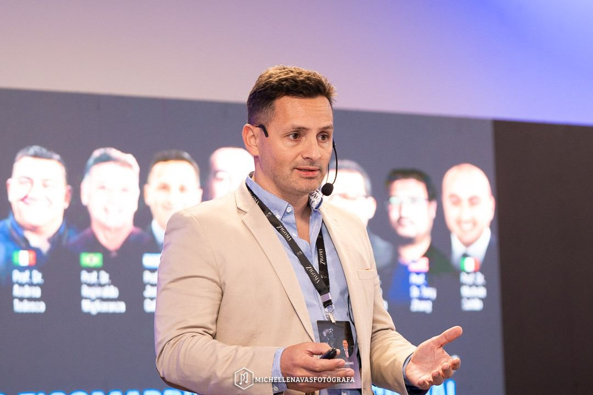
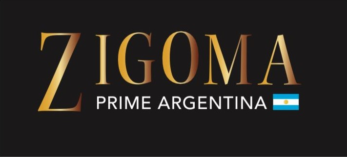
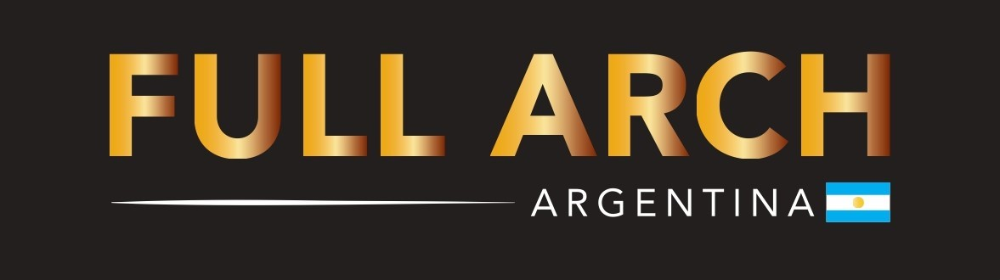

Perfil Profesional

- Graduado en la Facultad de Odontología de UNLP.
- Carrera de Especialista en Prótesis Dentobucomaxilar UBA.
- Carrera de Especialista en Cirugía Maxilofacial.
- Múltiples Cursos de Capacitación.
- Dictante de Zygomatic Fullweek Argentina, cursos Nacionales e Internacionales.
- Dictante de Full Arch Argentina.
Contacto:
+54 9 2920 69-5001
ZYGOMATIC

Es un placer presentar el curso de Implantología Zygomática, dirigido por el destacado experto en la materia, el Dr. José Galiano.
En este curso, los participantes tendrán la oportunidad de adquirir conocimientos y habilidades prácticas en la técnica de implantología zygomática.
El Dr. Galiano, con su amplia experiencia y reconocimiento internacional, compartirá sus conocimientos y técnicas para garantizar que los participantes estén equipados con las herramientas necesarias.
Los principales temas del programa incluyen:
Contacto:
+54 9 2920 48-8219
Residencia en
Cirugía Maxilofacial

Full Arch es un programa de formación intensiva y personalizada, diseñado para la capacitación de cirujanos maxilofaciales.
El curso combina un workshop teórico y un hands-on práctico.
El equipo docente está conformado por profesionales de renombre internacional:
Dr. José Galiano 🇦🇷
Dr. Xiaowen Zhang 🇺🇸
Dr. Augusto Druck 🇦🇷
Dr. Kevin Kim 🇺🇸
La metodología del curso se desarrolla a lo largo de 4 días, con un total de 36 horas de formación.
- Manejo de maxilares atróficos con implantes zigomáticos.
- Técnicas de rehabilitación con implantes: All-on-6 y All-on-4.
- Cirugía guiada desacoplable (All-on-X).
- Cirugía All-on-X FP1.
Contacto:
+54 9 2920 48-8219